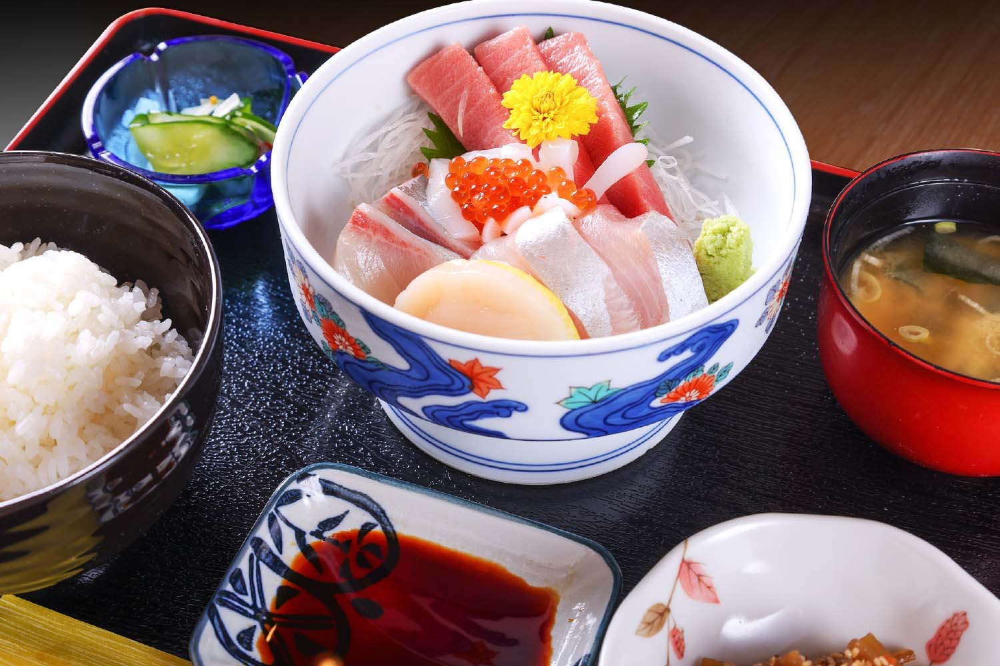
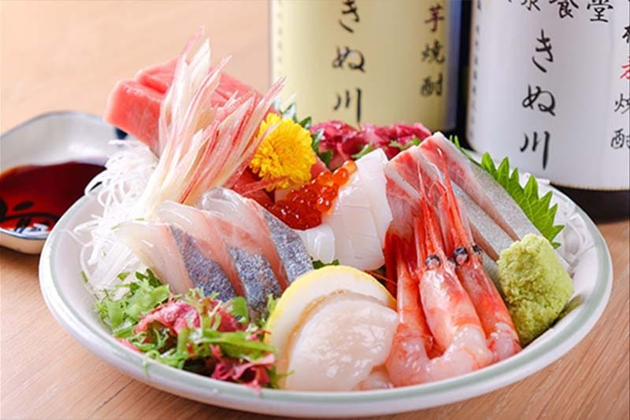
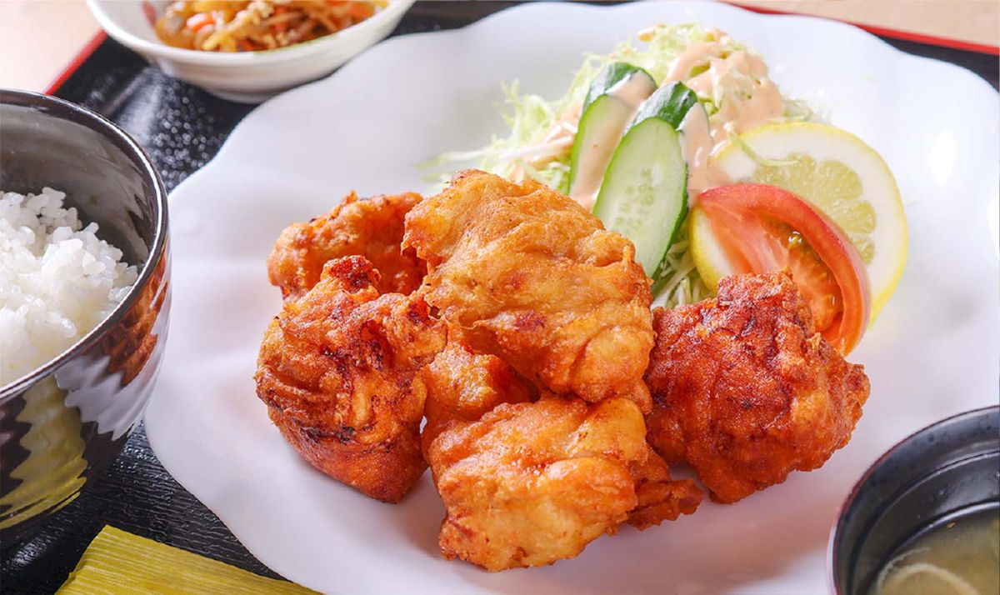
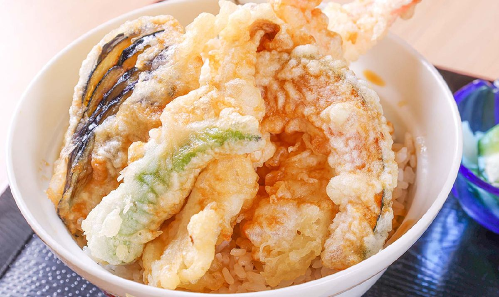
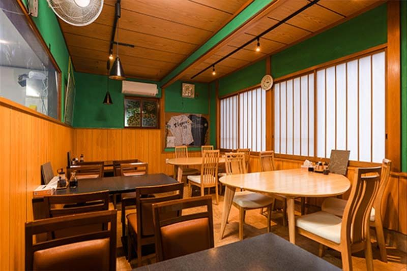
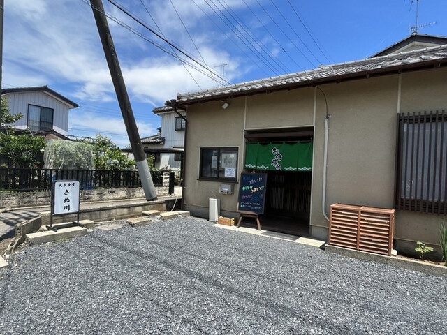
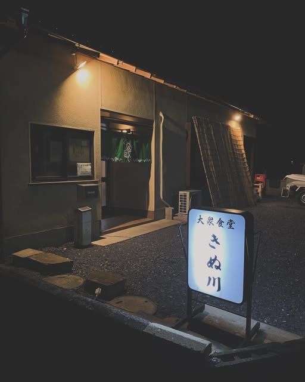

昼は定食、夜は一杯。
茨城県古河市の大衆食堂でございます。どうぞ普段着で、お腹を空かせてお越しください。
昼 11:00〜14:00 ／ 夜 17:00〜21:30 月曜定休

古河に、海はございません。それでも当店の魚は、毎朝、大洗の市場から仕入れております。海鮮丼、お刺身、焼き魚。四季折々の魚介を、特別な日の御馳走ではなく、いつもの膳に載せてお出しします。

とんかつ、生姜焼き、鶏の唐揚げ、天ぷら。揚げもの焼きものから、チャーハンやカレーまでそろえております。ご飯はしっかり盛りますので、少なめがよろしければお申し付けください。その日のおすすめは、店の黒板でご案内しております。


日が暮れると、同じ部屋で一杯やっていただけます。肴はフライや串カツから、もつ煮、冷奴まで二十七品。肴に、ご飯と味噌汁、小鉢をお付けして、定食にすることもできます。生ビールに瓶ビール、ハイボール、サワー、焼酎、冷酒。ノンアルコールもご用意しております。
当店は2022年6月に開店いたしました。還暦を過ぎてからの、新しい挑戦です。気負わず寄っていただける、毎日のための食堂でありたいと思っております。お支払いは現金のみでお願いしております。全席禁煙です。ご予約いただければ、貸切も承ります。



「刺身は中トロらしき3切、ぶり、タイが二切、イカと甘エビという豪華な形。そしてうまい。小鉢はきんぴらでこちらもうまい。」
お客様の声より
「掃除がいき届いていてとても綺麗だし接客も柔らかでした」
お客様の声より
「しっとり系のチャーハンは、具沢山＆ボリューミーでまいう〜セットのスープもなかなかうまし。あっという間に胃袋に吸い込まれました。とても居心地の良い食堂でした。」
お客様の声より
店は、国道125号線から南へ少し入ったところにございます。入る道は車一台がやっと通れる幅ですので、どうぞゆっくりお進みください。店のすぐ横の駐車場は向かいの会社のものですので、お停めにならないようお願いいたします。当店の駐車場は、店の前と、少し離れた区画にございます。場所が分かりにくいときは、お電話ください。ご予約はお電話で承ります。
| 住所 | 〒306-0101 茨城県古河市尾崎3525-23 |
|---|---|
| 電話 | 080-4064-1281 |
| 営業時間 | 昼 11:00〜14:00 ／ 夜 17:00〜21:30（L.O. 21:00） |
| 定休日 | 月曜日 |
| 席数 | 20席（ほか補助席2） |
| 駐車場 | 20台 |
| お支払い | 現金のみ |
| 喫煙 | 全席禁煙 |
満腹・満足・笑顔で帰っていただく食堂を目指しております。